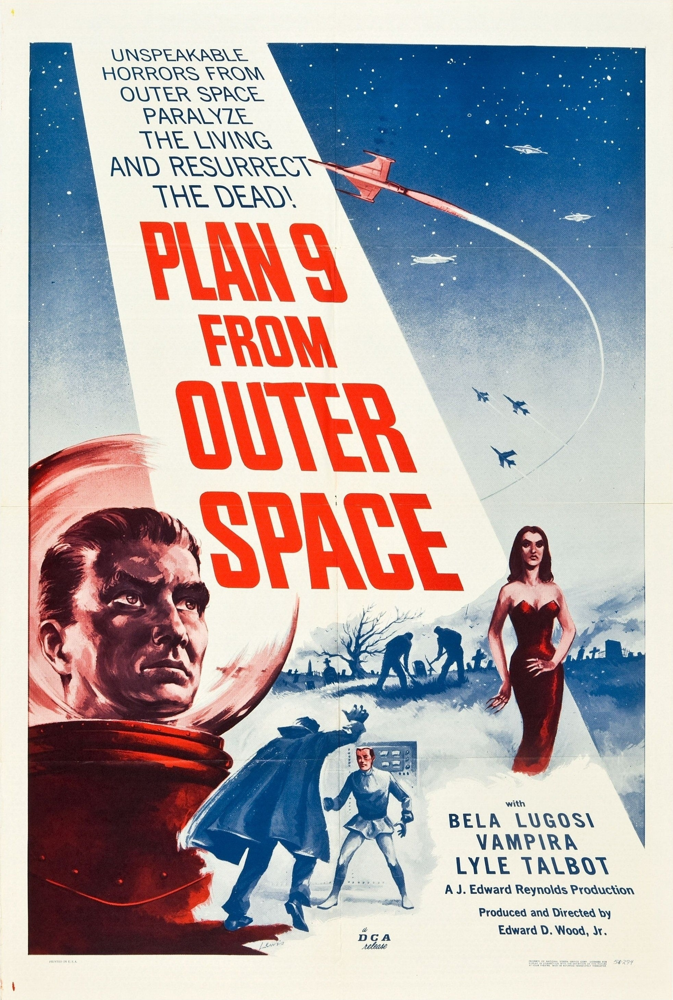

Plan 9 from Outer Space is a low-budget sci-fi horror film directed by Ed Wood that has become legendary for its numerous technical flaws and unintentionally comedic execution. The story involves aliens resurrecting the dead to stop humanity from creating a weapon that could destroy the universe, but the plot is mostly a backdrop for disjointed scenes, awkward dialogue, and continuity errors. The production quality is famously amateurish, with visible boom mics, shaky sets, and inconsistent editing. Despite (or because of) its flaws, the film has gained a strong cult status as one of the most iconic “so bad it’s good” movies ever made. Its sincerity, combined with its lack of polish, gives it a unique charm that has fascinated audiences and filmmakers alike. Overall, it’s widely regarded as a cinematic failure in traditional terms, but also as a beloved cult classic that’s entertaining in a completely unintended way.
